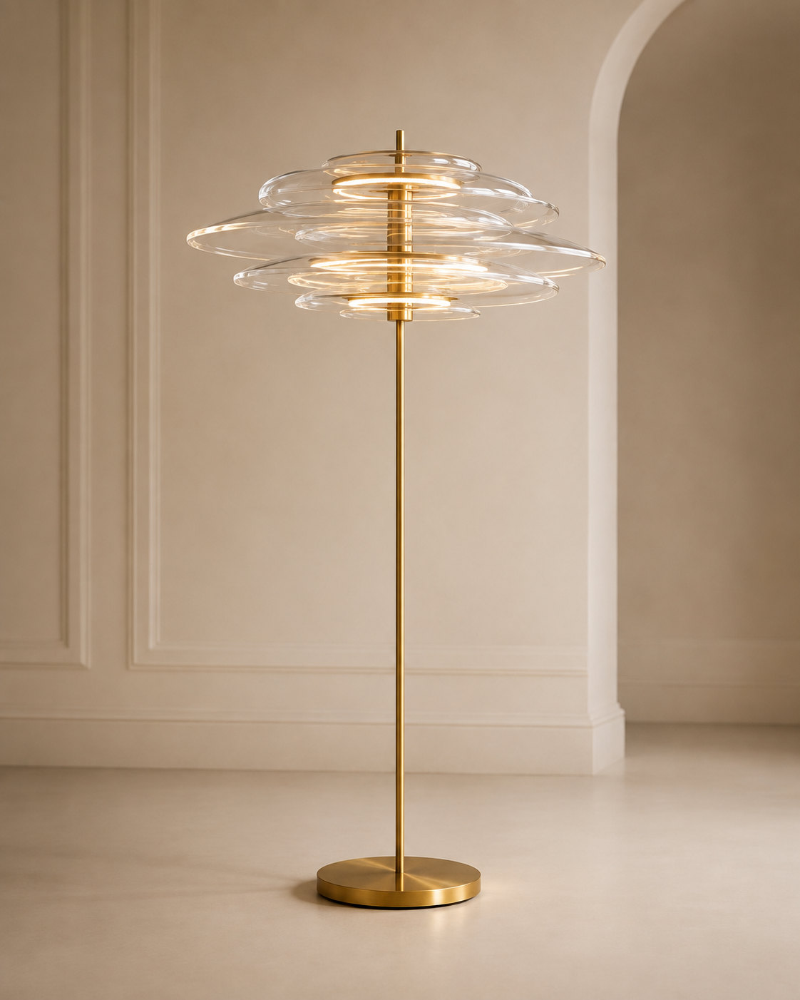

Intention visual · not contractualFirst prototype
The floor lamp
A vertical sculpture 180 cm tall. The seven strata sit between 140 and 170 cm, creating a luminous horizon at eye level.
- Height
- approx. 180 cm
- Diameter
- Ø 600 – 900 mm
- Status
- Prototype under study